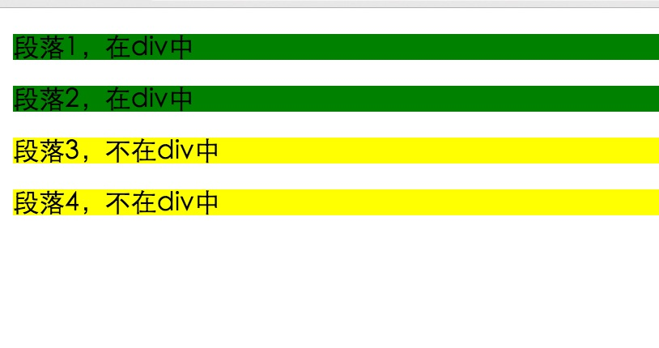

原文出处:本文由博客园博主菜鸟and小白提供。
原文连接:https://www.cnblogs.com/yang-guang-girl/p/11080648.html
原文连接:https://www.cnblogs.com/yang-guang-girl/p/11080648.html
一，效果图。

二，代码。

<!DOCTYPE html>
<html>
<head>
<meta charset="utf-8">
<title>CSS 组合选择符</title>
<style>
/*后代选择器*/
div p {
background-color: yellow;
}
/*子元素选择器*/
div>p {
background-color: green;
}
/*相邻兄弟选择器，选取了所有位于div元素后的第一个p元素*/
div+p {
background-color: red;
}
/*普通相邻兄弟选择器,所有位于div元素的所有相邻元素p*/
div~p {
background-color: yellow;
}
</style>
</head>
<body>
<div>
<p>段落1，在div中</p>
<p>段落2，在div中</p>
</div>
<p>段落3，不在div中</p>
<p>段落4，不在div中</p>
</body>
</html>
参考资料：《菜鸟教程》